开心果 Need Car · 2022-02-21T19:16:00+08:00 · 微信原文
前面基于m脚本编写C MEX S-Function进行了讨论，可以回顾MATLAB:自定义库&自定义C MEX S-Function,简单易学。虽然该方式简单，可以应对多数需求，但是还是不如手写方式灵活。当然，手写C MEX S-Function需要开发者有一定的C语言和tlc语言功底，不过，本文打算简化这个难度，直接给出模板，即使是初学者也可以在这个模板基础上完成项目开发。
提示：本文不做源文件解释，大家可以在此模板的基础上实践，进而加深理解。
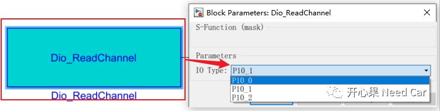
1.源文件编写
Dio_ReadChannel *.c 文件编写
/*=====================================** Required setup for C MEX S-Function **=====================================*//**** S_FUNCTION_NAME ****//* define error messages *//*========================** General Defines/macros **========================*//**** General Defines/macros ****/enum {g_pv = 0,NUM_PARAMS = 1};/** Need to include simstruc.h for the definition of the SimStruct and* its associated macro definitions.*//* Function: mdlInitializeSizes ===============================================* Abstract:* Initialize the sizes array*/static void mdlInitializeSizes(SimStruct *S){/* Set and Check parameter count *///int notSizesOnlyCall = ( ssGetSimMode(S) != SS_SIMMODE_SIZES_CALL_ONLY );ssSetNumSFcnParams(S, NUM_PARAMS);if (ssGetNumSFcnParams(S) != ssGetSFcnParamsCount(S)) return;if (!ssSetNumInputPorts(S, 0)) {return;}if (!ssSetNumOutputPorts(S, 1)) {return;}ssSetOutputPortWidth(S, 0, 1);//ssSetOutputPortDataType(S,0,SS_UINT8);/***** Set SFcn Param Untunable ****/ssSetSFcnParamNotTunable(S, 0);/* sample times */ssSetNumSampleTimes(S, 1);//ssSetInputPortDirectFeedThrough(S, 0, 1);/* options */ssSetOptions(S, (SS_OPTION_EXCEPTION_FREE_CODE |SS_OPTION_DISALLOW_CONSTANT_SAMPLE_TIME));} /* end mdlInitializeSizes *//* Function: mdlInitializeSampleTimes =========================================* Abstract:* Initialize the sample times array.*/static void mdlInitializeSampleTimes(SimStruct *S){ssSetSampleTime(S, 0, INHERITED_SAMPLE_TIME);ssSetOffsetTime(S, 0, 0.0);ssSetModelReferenceSampleTimeDefaultInheritance(S);} /* end mdlInitializeSampleTimes *//* Function: mdlOutputs =======================================================* Abstract:* Compute the outputs of the S-function.*/static void mdlOutputs(SimStruct *S, int_T tid){} /* end mdlOutputs *//* Function: mdlTerminate =====================================================* Abstract:* Called when the simulation is terminated.*/static void mdlTerminate(SimStruct *S){} /* end mdlTerminate */static void mdlRTW(SimStruct *S){/**** s_function parameters define ****/char_T *c_pv = (char_T *)malloc(mxGetNumberOfElements(PV(S)) + 1);mxGetString(PV(S), c_pv, mxGetNumberOfElements(PV(S)) + 1);/**** write out rtw parameters ****/if (!ssWriteRTWParamSettings(S, 1,SSWRITE_VALUE_STR,"r_pv",c_pv)){return; /* An error occurred which will be reported by SL */}}//# include "fixedpoint.c" /* needed when it is configured with fixdt data type */
Dio_ReadChannel *.tlc 文件编写
% File : Dio_ReadChannel.tlc% Abstract:% Target file for the C-Mex S-function crcengstat.c% Author :Songxin@2022/02/21%implements "Dio_ReadChannel" "C"%% Function: BlockTypeSetup ===========================================%function BlockTypeSetup(block, system) void%<LibAddToCommonIncludes("Dio.h")>endfunction %% BlockTypeSetup%% Function: BlockInstanceSetup ===========================================%function BlockInstanceSetup(block, system) void%endfunction %% BlockInstanceSetup%% Function: Start ====================================================%function Start(block, system) Outputendfunction %% Start%% Function: Outputs ===================================================%function Outputs(block, system) Output%assign y = LibBlockOutputSignal(0, "", "", 0)%assign t_pv = SFcnParamSettings.r_pv%<y> =Dio_ReadChannel(%<t_pv>);endfunction %% Outputs
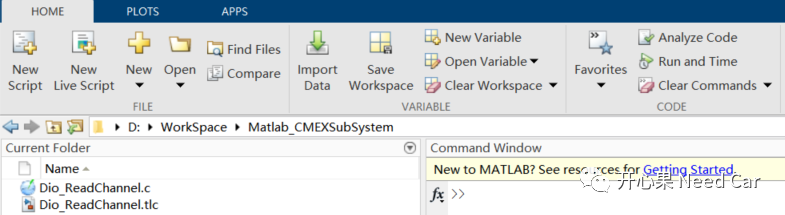
mex Dio_ReadChannel.c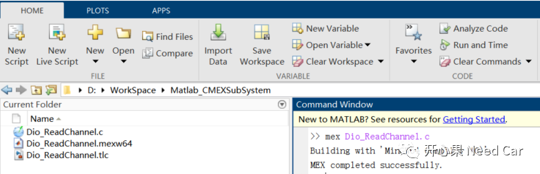
2.S-Function模块创建
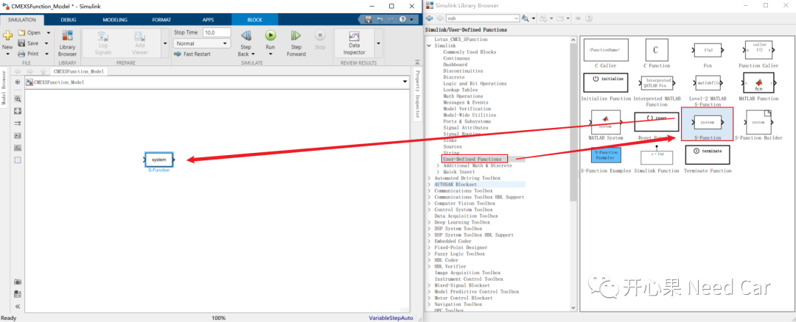
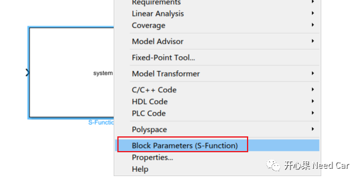
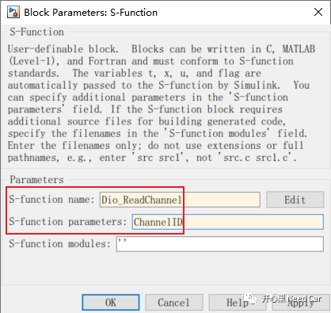
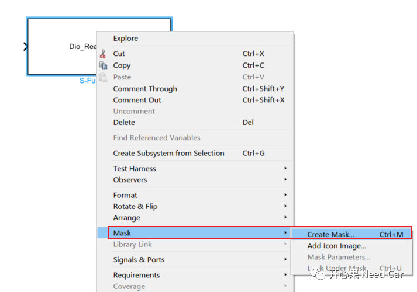
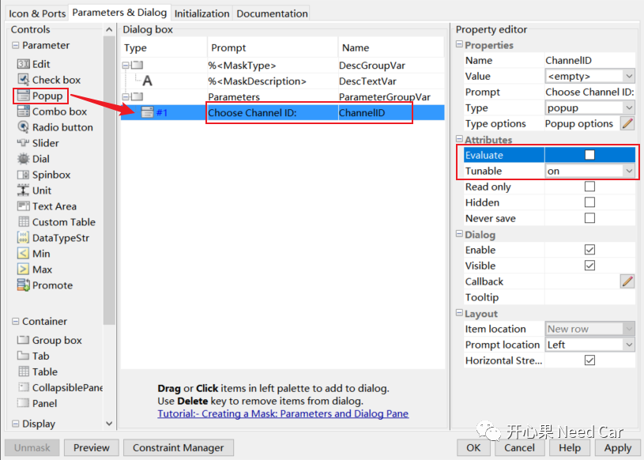
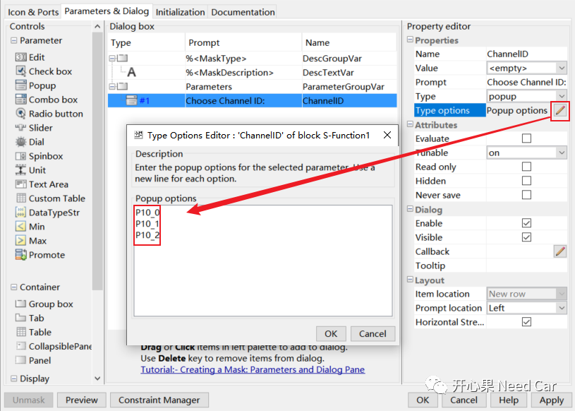
set_param([gcb],'ChannelID',get(gcbh,'MaskValueString'));get(gcbh)，获取当前选中模块句柄。
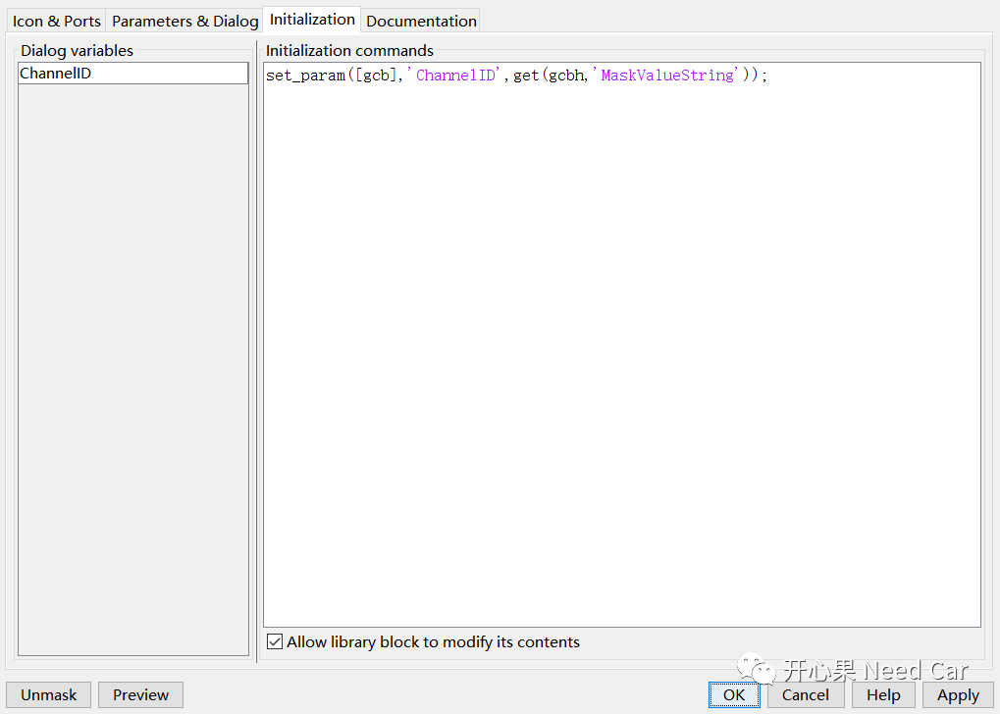
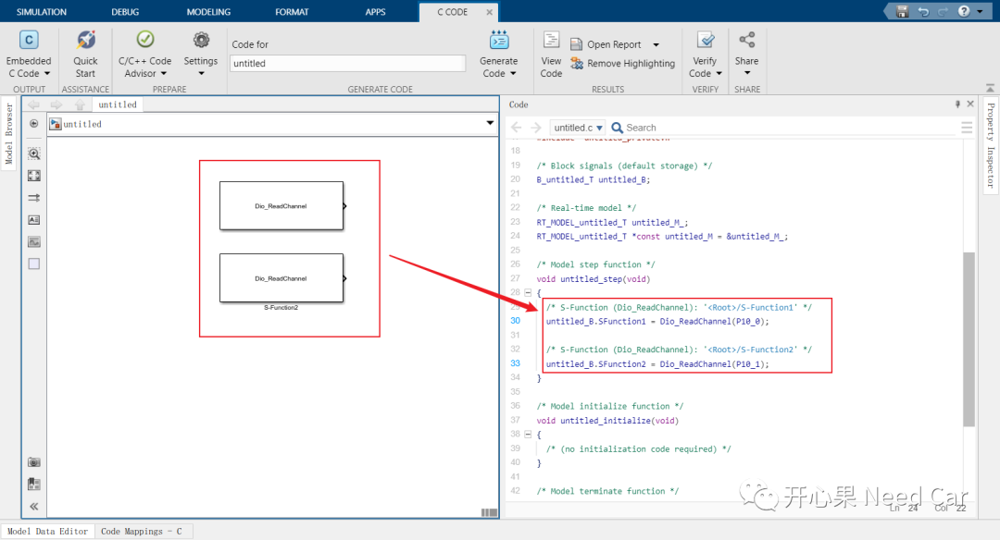
往期精彩回顾